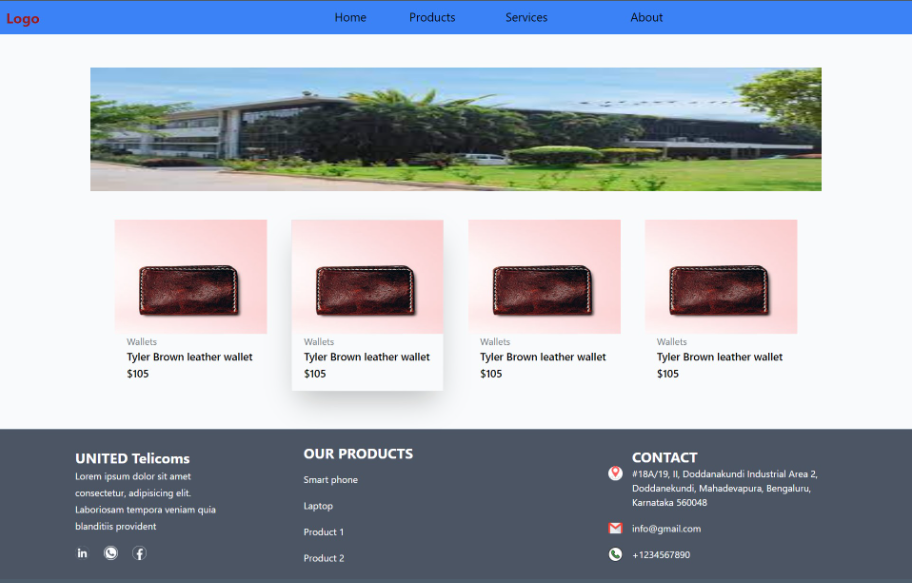

4.Project on Tailwind CSS
This is small project created using Tailwind CSS. The project showcases a responsive web page featuring a navigation bar with dropdown menus, a main section with product cards, and a footer with company information, product listings, and contact details.
4.1 Project Structure
The project consists of the following sections:
4.1.2 Main Section:
Displays product cards showcasing various items.
Utilizes Tailwind CSS classes for styling and hover effects.
4.2 Detailed Description
4.2.1 Navigation Bar
The navigation bar is designed to provide easy access to different sections of the website. It includes dropdown menus for specific categories:
- Products Dropdown:
Contains a list of product categories, each linking to relevant pages.
- Services Dropdown:
Offers a selection of services provided by the company, with links to respective pages.
About Dropdown: Provides information about the company, including details about the team and the mission and vision.